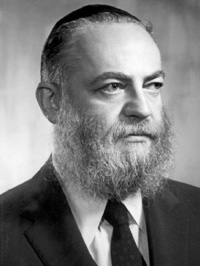

A Chassid in All Seasons and All Places
Charkov, Samarkand, Paris, New York, S. Paulo, Rio de Janeiro – in all of these places, Rabbi Tzvi Hirsch Chitrik a”h made a Chassidishe environment. * Profile of a Chassid, a distinguished resident of Crown Heights, who recently left us.

At his birth, his father sent a telegram to Rabbi Refael Kahn, asking him to inform the Rebbe Rayatz, who was in Leningrad at the time, and ask for a bracha. All the telegram said was: “Kaila bas Rochel is having difficulty in labor. Rachamim.” The Rebbe passed his hand over his forehead and said, “It seems to me that is Yehuda Chitrik.” At that very moment, Tzvi Hirsch was born.
When he was of school age, a private melamed was hired to teach him. He would leave with all the children, dressed for school and with his briefcase, as though he was heading to school, but would actually go to the house of his grandfather Rabbi Tumarkin, where he learned with the melamed. This went on until the passing of his grandfather on the first day of Chol HaMoed Sukkos 5697/1936.
During those terrible days in Russia, his father Reb Yehuda was a shochet of chickens. This was reason enough for the communist government to persecute him. He had to sleep in a different place every night. The family tried to obtain documents so they could move to Eretz Yisroel, but the gates of Russia were locked.
In 5702, they fled Charkov and arrived in Samarkand where many Lubavitchers had fled. In one of the shuls they started a yeshiva which Tzvi Hirsch attended.
The situation in the city was so bad that the six family members crowded into one little room along with other refugees whom their mother brought into the house. They had one chicken that provided one egg a day which they shared.
Aside from the crowding and hunger, he also had to contend with diseases. In the winter of 5703, he was sick with typhus. Fortunately, there was a Polish doctor who had some medication that was unobtainable in Russia at the time. He treated the boy who recovered completely.
After the war, Lubavitchers began leaving Russia masquerading as Poles who were granted the right to return to their homes in Poland. The Chitrik family was able to obtain forged documents, and they went to Rostov and davened at the gravesite of the Rebbe Rashab. From there they returned to Charkov and took a train until they arrived in Lemberg/Lvov on the Polish border. This was after seventeen exhausting days of travel. They were able to cross the border right after Shavuos.
As they escaped from Russia, a policeman suspected they were not Polish and asked them to count in Polish. Reb Yehuda was taken unawares and he counted in Russian. As a result, the family was immediately taken to the police station. Tzvi Hirsch, a young though talented bachur, managed to convince the police that it was a mistake and arranged things satisfactorily.
The family went from Poland to Prague where they received instructions from the Rebbe Rayatz: Chaikin and Chitrik to Antwerp. Together with the family of Rabbi Meir Chaikin, the two families went to Antwerp with a fairly long detour in Paris.
That year, 5707, the Rebbe went to Paris to greet his mother who had left Soviet Russia. The Rebbe’s mother was hosted in the home of a relative, Reb Shneur Zalman Schneersohn, and the Rebbe often ate dinner with his mother. During the meal, the Rebbe would tell stories which he heard from the Rebbe Rayatz. Among those in attendance at the meals was Hirschel Chitrik who was a ben bayis (member of the household) of the Schneersons.
One time, he told a story during the meal. The next day, the Rebbe repeated the story. Hirschel pointed out that he had told the same story the night before. The Rebbe said, “My practice is to listen to stories only from my father-in-law, the Rebbe. Other stories that are told go in one ear and out the other” (the Rebbe pointed at his two ears as he said this).
Hirschel noticed that the Rebbe left his mother’s apartment in an odd fashion. The Rebbetzin, noticing that he had observed something, told him the secret – since the Rebbe turned bar mitzva, he did not turn his back on her. “He thinks I don’t know.”
The families had plans of settling in Antwerp, but Hirschel Chitrik and his friend, Ezriel Chaikin, had other dreams. “Throughout our lives in Russia, we yearned to see the Rebbe Rayatz.” The Rebbe sent affidavits to the two bachurim so they could go to New York. They were on a ship that set sail from Europe with thousands of seamen who were returning home after the war.
Their great-uncle, Rabbi M. L. Rodstein, was waiting for them at the port. From there, they took the subway to 770 where they were accepted as talmidim in the yeshiva. After a few weeks, under the direction of the mashpia, Rabbi Shmuel Levitin, Hirschel had yechidus with the Rebbe Rayatz. The Rebbe smiled a lot and inquired about his father.
He had another yechidus that went as follows. On Erev Sukkos, he was asked to put s’chach on the Rebbe’s sukka, which was on the porch off of the yechidus room. He was instructed to knock on the door, not to wait for a response, and to go out to the sukka and then return. The Rebbe was sitting there and writing, dressed in his Shabbos clothes and his shtraimel. When he saw Hirschel walk through his room, he smiled broadly.
On 11 Shvat 5710, Hirschel was one of the people who dug the Rebbe Rayatz’s grave after the Rebbe requested this of him.
Before he married on Purim Katan 5711, he invited the Rebbe MH”M to be the mesader kiddushin (officiating rabbi at a wedding). The Rebbe immediately agreed. He asked the Rebbe whether he should fast on his wedding day and the Rebbe said it was worthwhile. The Rebbe arrived very late at the wedding hall. During the reception, some distinguished rabbis discussed the Rebbe’s instruction to the chassan to fast on Purim Katan. The Rebbe told them that he responds as he is asked. “The chassan asked me whether it was worthwhile and I told him it was worthwhile.”
Even before the wedding, the Rebbe told him to prepare to go on shlichus to Brazil right after the wedding. They actually left about a year later because it took time to arrange a visa for Brazil. In the meantime, he rented an apartment on Kingston Avenue.
The bris of his oldest son, R’ Yosef Yitzchok, took place on Rosh Chodesh Kislev 5712 in his home. The Rebbe attended the bris and was the sandak. At the seuda, the Rebbe said a sicha (Likkutei Sichos, vol. 3, Parshas VaYechi) and before leaving, the Rebbe took out five dollars and gave it to the father as an advance for the tuition of the baby.
SHLICHUS TO BRAZIL
At that time, shlichus was nowhere near as big an enterprise as it is today. Going to Brazil on shlichus was out of the ordinary and it was done with simple faith and firm hiskashrus. The night before the trip, Rabbi Shmuel Dovid Raitchik paid a surprise visit with a group of bachurim and young men, for a goodbye farbrengen.
When he arrived in Brazil, he worked as the shliach in S Paulo where he was appointed as principal of Beis Chinuch. He did so well that enrollment reached 400 students, but then problems set in with members of the community.
The first argument had to do with tzitzis. Although most of the children in the school wore tzitzis, following an instruction from the Rebbe he announced that whoever did not come to school wearing tzitzis would have to go home. A group of parents began a war against the new principal.
One of the administrators was on his way to Eretz Yisroel at the time and he spent Shabbos in Portugal. He met a fellow who did not know much about Judaism and decided to hire him as the principal.
When word got out that he was fired, the rest of the parents tried to organize a petition to demand that Rabbi Chitrik remain but they were unsuccessful. He had no choice, and with the Rebbe’s consent, he moved to Rio de Janeiro.
In Rio there was a Talmud Torah and Rabbi Chitrik ensured that those who learned secular studies in the morning would have Jewish studies in the afternoon and vice versa. There too, he was very successful.
The Chitriks’ home was open to all and they were known for their hospitality. The following is a portion from a letter that was written by one of the fundraisers for Yeshivas Tomchei T’mimim – 770, who was hosted by the Chitriks:
“Believe me when I say that I have no words with which to express my sincere thanks for your outstanding hospitality towards me during my ten day stay in your home while I was in Rio de Janeiro … How enjoyable it was to spend time in your home…especially when in a foreign land far from home and far from one’s usual environment. I would not be exaggerating when I say that during my wanderings in the Galus South America, it was only in your house that I felt at home. Every time I visited your home, it was a sort of consolation for my travels in foreign places which are not at all easy, especially for a resident of our Holy Land … Na V’Nad (a roamer and a wanderer) … Only in a home like yours and with a couple like you – until 120 – can the wanderer forget those two words and be rejuvenated as though in his own home.”
The situation in Rio was very difficult from a religious perspective. Religious affiliation was so ambiguous that the same man served as president of both the Tzeirei Agudas Israel movement and B’nei Akiva.
The advantage in this was that since there were no real party affiliations, there was no fear of Chabad. Every Friday night, 50-60 young men and women would come to Rabbi Chitrik’s house for the Shabbos meal.
Rabbi Chitrik was in constant touch with the Rebbe who answered his many questions and advised and directed him. One of the interesting responses he got was in connection with his work at the school. It was when they tried changing the method of teaching.
The children in Brazil hardly knew any Lashon Kodesh or Yiddish. At first, they were taught with the traditional method in which they translated the words of Chumash into Yiddish and then into Portuguese. This was very hard for the children who had to absorb two languages they did not know while also trying to grasp the material.
Rabbi Chitrik decided to bring in a new teacher who would translate the Chumash directly into Portuguese. The new method made it much easier for the students. When he wrote to the Rebbe about this, the Rebbe told him not to change from what they used to do. As far as his seeing much success with the new method, the Rebbe quoted the verse, “the approach of the wicked is successful.”
Another interesting response he received regarding shlichus happened like this:
Rabbi Chitrik wrote a weekly column, a third of a page in length, for two newspapers, in which he included explanations from Likkutei Torah, Tanya, and other commentaries. Every week, he would send the newspapers to the Rebbe. Every so often thieves would steal the stamps and the papers would not arrive. The Rebbe would mention in his letter that he had not received the latest newspapers.
In one letter, the Rebbe wrote several instructions about the column: 1) to write sources for everything he wrote and 2) not to mix what the Rebbeim said with other commentaries.
AFTER SHLICHUS
After he returned from shlichus in Brazil and worked in the jewelry business, in which he was very successful, Rabbi Chitrik was involved in helping mosdos. During his many business trips to distant places, he carried out many missions on behalf of the Rebbe, including building a mikva in the Far East.
His business trips to the Soviet Union were also used to spread Judaism. Every time he went there, he took many Jewish items along with him. He met with local Jews and strengthened them materially and spiritually.
In Crown Heights he was a notable askan. He served as honorary president of FREE and, with the Rebbe’s instructions, he worked behind the scenes so that the Brooklyn Jewish Center would be sold to Oholei Torah.
Torah study was a priority for him and he was particular about his set times for learning. He would go to the hospital with a Torah book in hand.
He passed away on Zos Chanuka of this year and is survived by children, grandchildren and great-grandchildren, many of whom are shluchim of the Rebbe.
Chaimson. "A Chassid in All Seasons and All Places." Beis Moshiach, no. 828 (March 21, 2012).